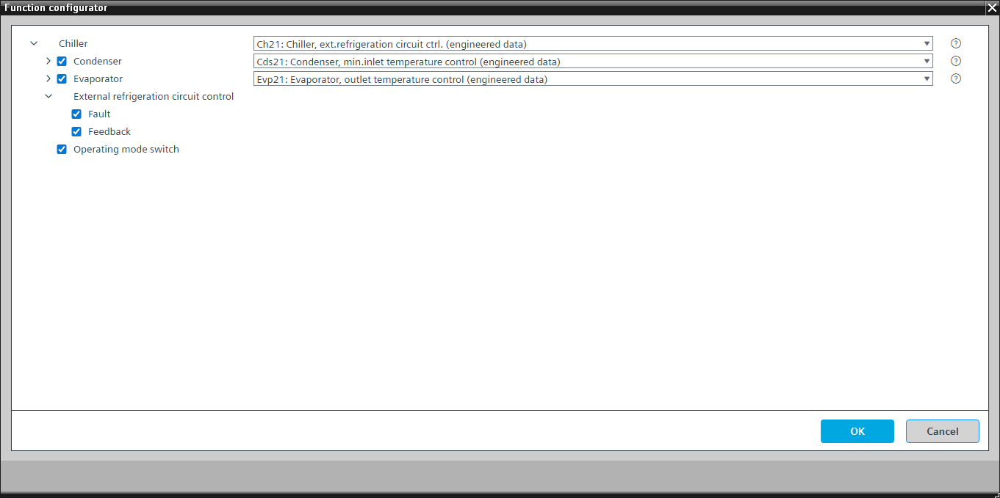

[Ch21] Chiller, with external refrigeration circuit control
Program block, name / node subtype: [Ch21] Chiller, with external refrigeration circuit control
Library hierarchy: Cooling and refrigeration equipment
Family: Ch
Project tree | Diagram |
|---|---|
|
|
|


Configurator


Program blocks are stored in the library without I/Os. Use the auto-create and auto-connect functions to create I/Os and/or to connect them to the interface blocks, e.g., R_A, CMD_B. Alternatively, take the I/Os from the folder containing the predefined I/Os in the library and/or from the plant and connect them to the interface blocks.
Function
Controls a chiller.
There are settings in the program for the nominal power of the chiller and for the transient state times (a signal that the chiller is in a transient state that blocks the logic for generating further step-up and step-down pulses for the power control and compensation) when switching on or off, e.g., 5 minutes when switching on and 2 minutes when switching off.
An interface to the control unit of the chiller enables it, sends a setpoint, and reads optional signals for fault and feedback.
The switch-on and switch-off sequence for the condenser, evaporator, and interface to the control unit are defined in the function block CMDSEQ_B.
Optional functions
This program block has the following optional functions:
Option: External refrigeration circuit control'Fault (1xBI)
Reads the fault signal from the chiller control unit and generates an alarm.
Option: External refrigeration circuit control'Feedback (1xBI)
Reads the feedback signal from the chiller control unit and indicates if the compressor is running.
Option: Condenser (3xAI, 6xBI, 1xAO, 3xBO)
Controls the inlet temperature of the condenser and sends a signal that recooling is needed (Cds21).
Option: Evaporator (3xAI, 7xBI, 1xAO, 2xBO)
Controls the outlet temperature of the evaporator (Evp21).
Option: Operating mode switch (1xMI=2xBI)
Reads the state of an operating mode switch, normally at the front of the electrical panel, and has the states "Auto", "Off", and "On".
Mandatory elements
Name | Description | Type | Alarm / Notification class | Trend / Type | |
|---|---|---|---|---|---|
|
RfCrtExtCtl'Cmd | External refrigeration circuit control'Command | BO: Binary output | No | Yes, 4 | |
RfCrtExtCtl'SpT | External refrigeration circuit control'Temperature setpoint | AO: Analog output | No | Yes, 4 | |
Optional elements
Name | Description | Type | Alarm / Notification class | Trend / Type | |
|---|---|---|---|---|---|
|
RfCrtExtCtl'Flt | External refrigeration circuit control'Fault | BI: Binary input | Yes, 4/5 | No | |
RfCrtExtCtl'Fb | External refrigeration circuit control'Feedback | BI: Binary input | No | No | |
Evp | Evaporator | N/A | N/A | ||
Cds | Condenser | N/A | N/A | ||
OpModSwi | Operating mode switch | MI: Multistate input | No | Yes, 4 | |